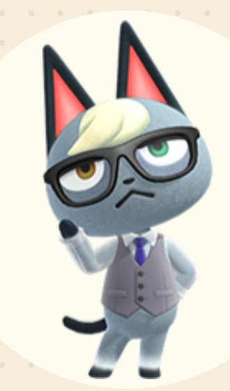
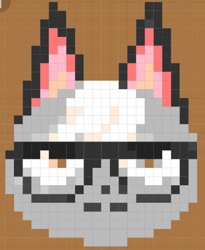
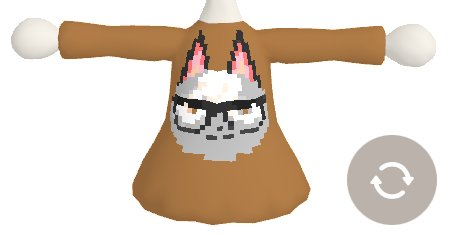
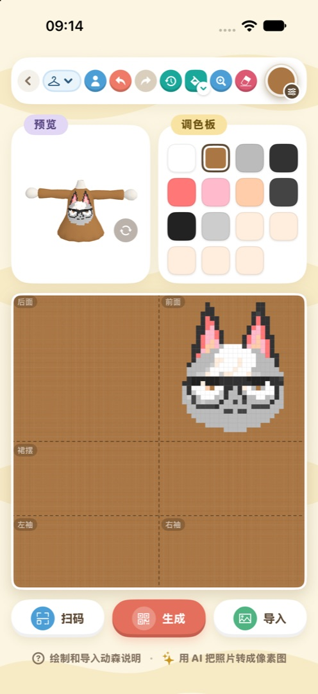
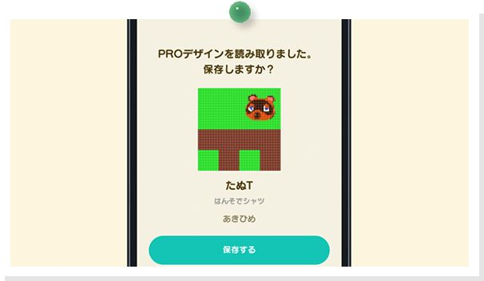

マイデザインPRO：写真を服や絵にする
種類を選ぶ、写真を読み込む、手直しする、QRコードを作ってゲームに取り込む
ゲームの中で1マスずつドットを打っていくと、服1着描くだけでもかなり時間がかかります。あつ森 サークルの「マイデザインPRO」なら、スマホの写真をそのままゲーム用のデザインに変換できます。細かいところを手直ししてQRコードを作り、Nintendo Switch Appで読み込めば、服として着たり、壁に飾ったり、地面に敷いたりできます。
始める前に2つ確認しておきましょう。1つ目、服と帽子が作れるのはiOSアプリだけです。WeChatミニプログラム版で作れるのは32×32のずあんで、絵や床、旗を作るにはこれで十分です。2つ目、最後にゲームへ取り込むにはNintendo Switch Appが必要で、Nintendo Switch Onlineへの加入が必須です。加入していないと、コードを作っても読み込めません。



1枚の画像をドットに変換して、服にプリント
01まず何を作るか決める
アプリでは図鑑トップの「マイデザインPRO」から、ミニプログラム版ではトップページの「マイデザイン」から始めます。図鑑で気に入ったものを見つけたら、詳細ページの「QRコード」ボタン（住民のページでは「看板を作る」）を押すと、そのアイテムの画像を下絵にしてすぐに作り始められます。
アプリを開くと、最初は「ずあん」になっています。服を作りたいときは、先にツールバーの種類ボタンを押して形を選んでから始めましょう。種類ごとのサイズと、最後にできるQRコードの枚数は次のとおりです。
| 種類 | サイズ | QRコード |
| ずあん | 32×32 | 1枚 |
| シャツ／ワンピース（ながそで・はんそで・ノースリーブ） | 64×64 | 4枚 |
| ニットキャップ／角のぼうし | 32×32 | 1枚 |
| かおだしかんばん | 64×64 | 4枚 |
服と帽子は3Dプレビューに対応していて、描きながらくるくる回して仕上がりを確認できます。服のキャンバスでグレーになっている部分は、その形では切り取られる場所なので、描いても表示されません。
注意種類を変えるとキャンバスがリセットされます。必ず種類を決めてから描き始めましょう。
02写真を読み込んで、画質を選ぶ
「読み込み」を押して、写真から画像を1枚選びます。ミニプログラム版では元画像を使うよう案内が出るので、選ぶときは「元の画像」にチェックを入れましょう。入れないと画像が一度圧縮されて、変換後がさらにぼやけます。切り抜き画面では、ドラッグとピンチで使いたい部分を枠に収めます。
画質の選び方
仕上がりをいちばん左右するのがここです。画像そのものの特徴に合わせて選びましょう。
ふつうの写真なら、アプリでは「写真（おすすめ）」。ミニプログラム版には「写真（ノイズあり）」と「写真（くっきり）」の2つがあり、画像によって結果が変わるので、両方試してから選んでください。
もともとドット絵の画像なら「ドット絵」。拡大されていてマスがずれている場合は、アプリの「ドット絵・自動整列」を使いましょう。何×何マスとして認識したかを教えてくれます。
もともと色数がとても少ない画像には「通常の縮小」。画像を縮小するだけで、ほかの処理は一切しません。
そのほかの設定は、色がおかしいときに
画質を選べば、たいていの画像はそのまま使えます。色がどうも合わないときだけ、次の項目を調整しましょう。
· 「色の選び方」は最初「標準」です。色がおかしければ「精密クラスタ」や「ブロック分割」に変えてみてください。
· 「透明のしきい値」は、背景を切り抜き済みのPNG用です。
· 「鮮やかさ」（アプリ）は、色がくすんで見えるときに「強め」にします。
· ディザ（ミニプログラム版）は、写真なら「弱いディザ」をオンにしてもOK。アイコンや文字ではオフのままにしましょう。
· 「余白の色」（アプリ）は、服・帽子・看板の透明な部分を何色で埋めるかの設定で、最初は白です。
壁一面に並べる
ずあん1枚は32×32しかないので、大きな絵を飾るには小さすぎます。ずあんを作るときは1枚の画像を何枚かに分割でき、縦横それぞれ最大15枚、合計最大49枚まで、すべてのQRコードを一度に作れます。ゲームの中で番号順に床へ敷いたり壁に飾ったりすれば、1枚の絵に戻ります。
服の一部分だけ変える（アプリ）
服を作るときは「取り込み先」という項目が増えて、写真を前・後ろ・そで・すそだけに入れられます。たとえば服全体を下地の色で塗ってから、胸の部分にだけ画像を入れる、といった使い方ができます。
03細かいところを手直しする
写真から変換すると、ふちや目のような細かい部分がつぶれてしまうことがよくあります。自分で手を入れて整えましょう。
ペンは1回で1マス、ぬりつぶしはつながった同じ色の範囲をまとめて塗ります。まちがえたら取り消せばOK。アプリでは絵全体の位置をずらすこともでき、キャンバスは2× / 4× / 8×まで拡大できるので、細かいところは拡大してから直すと楽です。
色には決まった制限があります。1つのデザインで使えるのは最大15色、16番目は透明で、色はゲームに用意されたパレットからしか選べません。パレットの1色を変えると、キャンバス上でその色を使っているマスもいっしょに変わるので、全体の色味を調整したいときに便利です。
デザイン名、作者名、島の名前は「デザイン情報」で変更できます。これらはQRコードのカードに印刷されます。
ほかの人が公開しているデザインのコードを見つけたら、「読み取り」で取り込めば、それをもとに続きを編集できます。アプリではカメラで直接読み取るほか、写真からスクリーンショットを選ぶこともできます。服の4枚のコードは順番どおりでなくても大丈夫で、足りない1枚を画面で教えてくれます。ミニプログラム版で読み取れるのは、コード1枚のずあんだけです。

アプリでワンピースを作っているところ。上が3Dプレビューとパレット、下がキャンバスです
04QRコードを作って、ゲームに取り込む
描き終わったら「作成」を押します。アプリで作った服は「分けて作成（4枚）」か「まとめて1枚」かを聞かれます。ゲームに取り込むなら「分けて作成」を選びましょう。「まとめて1枚」は友だちに見せる用です。「すべて保存」でコードを写真に保存します。
作ったデザインはアプリの「マイデザインPROの履歴」に50件まで残るので、あとから呼び出して続きを編集できます。
ゲームに取り込む手順
1. まずNintendo Switch Onlineに加入します。はじめて使うときは、ゲームのタイトル画面で−ボタンを押して「タヌポータル」を有効にしておきます。
2. スマホで任天堂公式のNintendo Switch Appを開き、ゲーム機と同じアカウントでログイン。ゲーム専用サービスから『あつまれ どうぶつの森』を選び、「マイデザイン」に入ってQRコードの読み取りを選びます。

Nintendo Switch Appで服1着分のコードを読み取ると、保存するかを聞かれます（日本語版の画面）（画像：任天堂）
3. 別のスマホやタブレット、パソコンで保存したQRコードを表示し、その画面を読み取ります。服の4枚のコードは、カードに書かれた1→2→3→4の順に続けて読み取りましょう。
4. ゲームに戻り、スマホの「マイデザイン」を開いて−ボタンでダウンロードし、空いている枠を選んで保存します。
ヒントNintendo Switch Appやゲーム内のメニュー名は、バージョンによって少し変わることがあります。「マイデザイン」「ダウンロード」といった言葉を目印に探してください。
05よくある質問
服の透明な部分が色の帯になった
本当の透明にできるのは「ずあん」だけです。服で透明のまま残した部分は、ゲームが隣の色を引き伸ばして帯のようにしてしまいます。服を作るときは透明を残さず、空いているところも色で埋めましょう（アプリなら「余白の色」でまとめて埋められます）。
色が合わない
写真には何千何万という色があり、15色にはどうしても収まりきらないので、多少の色ずれは避けられません。まず「画質」と「色の選び方」の組み合わせをいくつか試していちばん近いものを選び、そのあとパレットで大事な色をいくつか正確に直しましょう。
もっとゲームっぽい仕上がりにしたい
デザイン画面の下にある「AI生成プロンプト」をコピーして、ChatGPTやGeminiなどの画像生成AIに渡し、写真を先に32×32のドット絵にしてもらいます。できた画像を読み込み直して画質を「ドット絵」にすると、ずっとすっきりした仕上がりになります。
QRコードが読み取れない
画像が強く圧縮されていると、QRコードが読み取れなくなることがあります。友だちにコードを送るときは、元の画質のまま送りましょう。
ミニプログラム版では服が作れない
あつ森 サークルのWeChatミニプログラム版とiOSアプリは、WeChatでログインすれば同じデータを使えます。服を作りたいときは、iOSアプリに同じWeChatアカウントでログインしてください。
あつ森 サークル · App Store で「あつ森 サークル」を検索